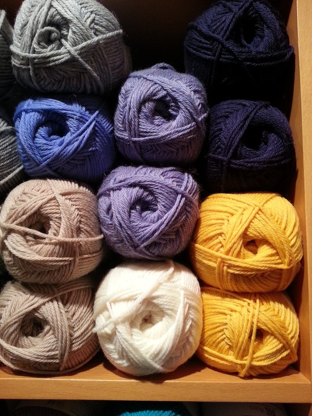
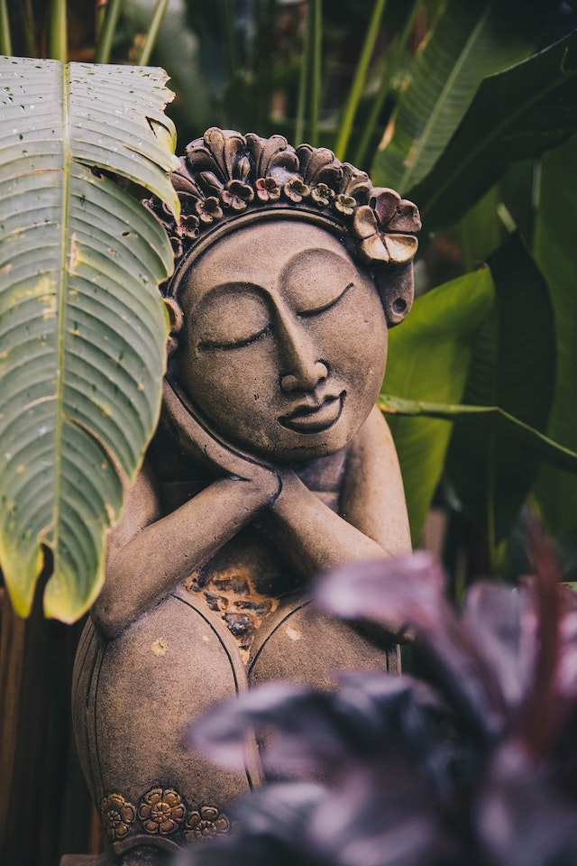

Other Interests
A little bit more about me...

Dance
I am a former professional dancer. Ballet, body conditioning and other types of dance where part of my daily life. This type of art contributed to developing a deep sense of commitment to focusing and learning quickly. Dancing gave me the opportunity to travel, have cultural experiences and work in many different settings. In the past few years I the joined the Lindy Hop community here in NYC which has been a delightful souce of happiness, friendships and lots of dancing.
Travel & Culture
I've always had the desire to see more of world and I luckily share that passion with my husband. We dream of seeing it all and we are always excited to plan the next trip. Seeing the natural world and experiencing other cultures is life enriching, it makes me feel open, creative and more appreciative of what I already have.

Environment
I have deep respect for the power and beauty of the natural world. I'm excited about scientific and technological innovations that offer a path to harmonious coexsistence between humans and nature.

Arts & Crafts
Handmade items are truly special to me, I truly admire the thought and skill put into their creation. I find that most of the time they teach us something about the somebody, about culture or about ourselves. I like to challenge myself learning new things, I taught myself how to sew, crochet, embroider and do macrame and love to spend some of my free time doing DIY projects.

Healthy Food
Learning about global problems like climate change and health made me question a lot of my personal choices, it shifted my perspective and made me realise that I can take ownership of my health and my impact on the planet. Having that power led me to make healthier food choices and think more about how to live in ease rather than disease.

Mindfulness
I've been practicing yoga for about 9 years and this is how I first learned about "being mindful". The practice on the yoga mat taught me empathy, acceptance, resiliece and then I extended this knowledge to other areas of my life. This has been a valuable contribution to my ongoing personal development and provides a framework to nuture meaningful relationships in my life.